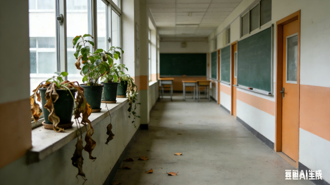
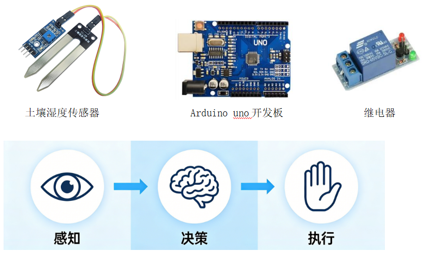
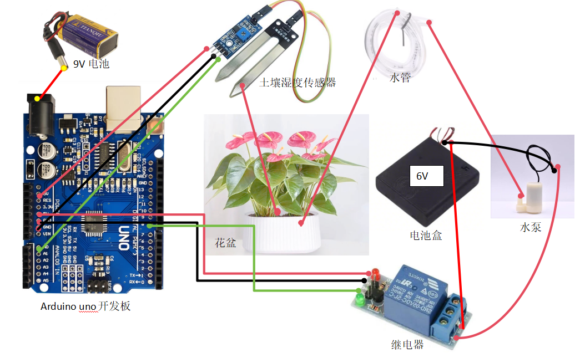

场景：课室走廊有干枯的花草

核心问题：怎样解决校园放假，无人照料绿植的问题？
请提出三个可行的自动浇花方案：
| 方案名称 | 方案内容 | 所需设备 |
|---|---|---|
| 方案1 | ||
| 方案2 | ||
| 方案3 |
1. 从成本、制作难度评估方案：
| 方案名称 | 成本预估 | 制作难度 |
|---|---|---|
| 方案1 | ||
| 方案2 | ||
| 方案3 |
2. 自动浇花器系统设计：

（1）感知环节：谁在"看"？看什么？
（2）决策环节：谁在"想"？怎么判断？
（3）执行环节：谁在"做"？做什么？

土壤湿度传感器5v ↔ 开发板5v
土壤湿度传感器GND ↔ 开发板GND
土壤湿度传感器A0 ↔ 开发板A0
继电器5v ↔ 开发板5v
继电器GND ↔ 开发板GND
继电器数字IN ↔ 开发板数字8端口
开发板电源9v ↔ 9v电池盒
水泵正极 ↔ 继电器NO
继电器com ↔ 6v电池盒正极
水泵负极 ↔ 6v电池盒负极
| 测试编号 | 土壤干燥程度描述 | 浇水时长（秒） | 泥土湿透程度 | 土壤湿度传感器值 |
|---|---|---|---|---|
| 1 | 土表发白，盆轻 | 10 | 仅表层1-2厘米湿润，下层干燥 | 1023 |
| 2 | 土表微干，盆减重 | 20 | 上层3-4厘米湿透，下层半干 | 980 |
| 3 | 土表稍干，盆重变化小 | 30 | 整体湿透，排水良好，无积水 | 850 |
| 4 | 土表刚显干，盆重基本未变 | 40 | 完全湿透，盆底有少量积水 | 780 |
为了保证薄荷能在合适湿度环境生长，避免过度干燥，在程序调试处填写一个合适的土壤湿度传感器启动阈值，这个阈值是